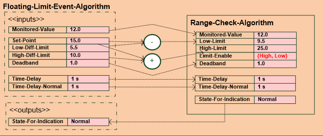
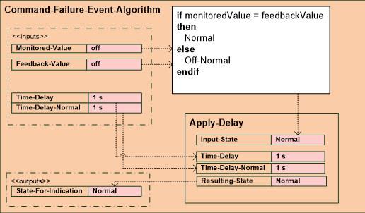
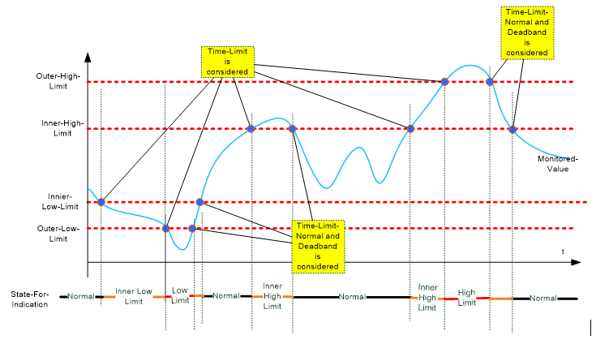
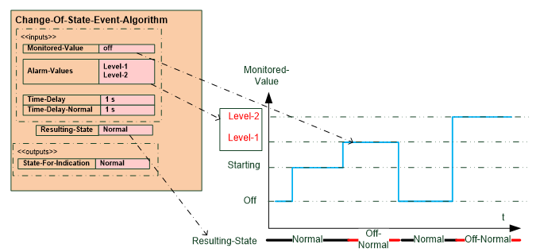

活动
Event types
事件类型是只读属性，指示事件注册对象实例要使用的事件算法。该属性的值由所选的警报扩展决定。有不同类型的事件注册（Event-Type）对象：
默认事件类型 | 引用的 BA 对象类型 |
|---|---|
浮动限额 | 环形 |
命令失败 | 二进制输出、多态输出 |
超出范围 | 模拟输入、模拟输出、模拟值、模拟计算值、模拟过程值 |
无符号范围 | 累加器 |
状态改变 | 二进制输入、二进制值、二进制计算值、二进制过程值、多状态输入、多状态值、多状态计算值、多状态过程值、现场总线管理、现场设备 |
位串的改变 | 其他 |
Floating limit
浮动限制事件算法由下限和上限设定点参考值的参数组成。这适用于模拟输出值。

Floating limit parameters:
设定点参考提供设定点的对象参考，并在达到其值时生成警报。上限和下限警报值设置最大和最小警报限值，时间延迟指定对象必须处于或退出警报或故障状态才能发送通知的持续时间。
Command failure
命令失败事件算法将监测值与反馈参考值进行比较。

当监测值与反馈值不同时，发出警报。反馈参考值仅适用于二进制输出对象。
Out of range and unsigned range
超出范围和无符号范围事件算法具有独立应用的上限和下限。结果状态被组合成一种状态以供指示。

Out of range and unsigned range parameters:
上限和下限警报值设置最大和最小警报限值，时间延迟指定对象必须处于或退出警报或故障状态才能发送通知的持续时间。
Change of state
在状态变化事件算法中，定义了一组警报值。当监测值达到这些报警值之一时，将导致异常状态并发出报警声。

Change of state parameters:
警报值是异常离散值的列表。当监测值达到这些值之一时，就会发出警报。上限和下限报警值设置最大和最小报警限值。时间延迟指定对象必须处于或退出警报或故障状态才能发送通知的持续时间。
Change of bitstring
位串事件算法的更改在应用位掩码后检测位串类型的监控值是否等于列为警报值的值：
- If event state is normal, and test value, after applying bitmask, remains equal to any of the values contained in alarm values for the time period specified by time delay, then indicate a transition to the off-normal event state.
- If event state is offnormal, and test value, after applying bitmask, remains not equal to any of the values contained in alarm values for the time period specified by time delay normal, then indicate a transition to the normal event state
- If event state is offnormal, and test-value, after applying bitmask, is equal to one of the values contained in alarm values that is different from the value that caused the last transition to offnormal and remains equal to that value for the time period specified by time delay, then indicate a transition to the offnormal event state.
Change of bitstring parameters:
位串参数表示位掩码，该位掩码定义了对于与警报值进行比较而言非常重要的监控值的位。警报值是异常离散值的列表。当监测值达到这些值之一时，就会发出警报。时间延迟指定对象必须处于或退出警报或故障状态才能发送通知的持续时间。
Event notification
事件注册对象还监视具有引用属性的对象的状态标志属性。如果引用对象的故障标志被设置，则会发出警报。